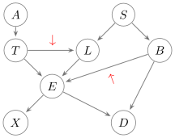

Background
The junction tree algorithm is an efficient method to perform Bayesian inference in probabilistic graphical models, such as Bayesian Networks or Markov random fields. The general problem is to calculate the conditional probability of a variable or a set of variables, given observed values of another set of variables. This is known as the inference problem.
The inference problem
Given a set of random variables $\bm{V}$ and their joint distribution $P(\bm{V})$, compute one or more conditional distributions over a set of query variables $\bm{Q}$ given observations $\bm{e}$ for the set of observed variables $\bm{E}$.
The junction tree algorithm
We briefly describe the junction tree algorithm (JTA). For a more elaborate presentation, see [huang1996inference]. The figure below presents an overview of the JTA.

A probabilistic graphical model (PGM) is the input to the JTA. PGMs illustrate the mathematical modeling of reasoning in the presence of uncertainty. Bayesian networks and Markov random fields are popular types of PGMs. Consider the Bayesian network shown in the figure below known as the ASIA network [lauritzen1988local]. It is a simplified example from the context of medical diagnosis that describes the probabilistic relationships between different random variables corresponding to possible diseases, symptoms, risk factors and test results. It consists of a graph $G = (\bm{V},\mathcal{E})$ and a probability distribution $P(\bm{V})$ where $G$ is a directed acyclic graph, $\bm{V}$ is the set of variables and $\mathcal{E}$ is the set of edges connecting the variables. We assume all variables to be discrete. Each variable $V$ is quantified with a conditional probability distribution $P(V \mid pa(V))$ where $pa(V)$ are the parents of $V$. These conditional probability distributions together with the graph $G$ induce a joint probability distribution over $P(\bm{V})$, given by
\[P(\bm{V}) = \prod_{V\in\bm{V}} P(V \mid pa(V)).\]
| Random variable | Meaning |
|---|---|
| $A$ | Recent trip to Asia |
| $T$ | Patient has tuberculosis |
| $S$ | Patient is a smoker |
| $L$ | Patient has lung cancer |
| $B$ | Patient has bronchitis |
| $E$ | Patient hast $T$ and/or $L$ |
| $X$ | Chest X-Ray is positive |
| $D$ | Patient has dyspnoea |
Graphical transformation
JTA performs probabilistic inference on a secondary structure known as a junction tree. A junction tree is constructed from a PGM by means of three graphical transformations: moralization, triangulation, and connection of clusters.
Moralization
Moralization converts a directed acyclic graph into a undirected graph by dropping the directions of the edges and connecting the parents of each node. The figure below shows the corresponding moral graph of the Bayesian network in the figure above. The arrows point to the edges introduced after the transformation.

Triangulation
Triangulation of an undirected graph is carried out by connecting two non-adjacent nodes in every cycle of length greater than three. The figure below shows a triangulated graph of the moral graph in the figure above. The arrow points to the edge introduced after the transformation. Note that, in general, there is more than one way of triangulating a given undirected graph. An optimal triangulation is one that minimizes the sum of the state space sizes of the maximal cliques[1] (denoted with colored boundaries in the figure below). This problem is NP-complete [arnborg1987complexity].
Connection of clusters
The maximal cliques of the triangulated graph correspond to the nodes of the junction tree. We call these clusters. Clusters are then connected in a tree structure such that the running intersection property is satisfied: given two clusters $\bm{X}$ and $\bm{Y}$ in the tree, all clusters on the path between $\bm{X}$ and $\bm{Y}$ contain $\bm{X} \cap \bm{Y}$. Each edge is labeled with the intersection of the adjacent clusters. Such labels are called separator sets or sepsets. [jensen1994optimal] present an optimal method to construct a junction tree from a triangulated graph. The figure below shows the result of applying this method to the triangulated graph in the figure above. Clusters are depicted as large circles and sepsets as rectangles. The color of clusters correspond to the maximal cliques of the triangulated graph (figure above). The encircled variables indicate which conditional probability distributions in the equation presented in section The junction tree algorithm were multiplied into which cluster potentials of the junction tree.
Initialization
Each cluster ${\bf X}$ in the junction tree is associated with a potential $\psi_{{\bf X}}$. A potential is a function over a set of variables $\bm{V}$ that maps each instantiation $\bm{V} = \bm{v}$ into a nonnegative number. First, all cluster potentials in the junction tree are initialized to unity. Then, each conditional probability distribution $P(V \mid pa(V))$ in the equation presented in section The junction tree algorithm is multiplied into a cluster potential ${\bf X}$ that contains its variable and its parents:
\[\psi_{{\bf X}} \leftarrow \psi_{{\bf X}} \cdot P(V \mid pa(V)).\]
Note that a probability distribution is a special case of a potential. The encircled variables in the figure above indicate which conditional distributions in the Bayesian network figure were multiplied into which cluster potentials of our running example.
Observation entry
Observations take the form of ${\bf E=e}$, where ${\bf e}$ is the instantiation of the set of variables ${\bf E}$. These are incorporated into the junction tree by finding a cluster potential $\psi_{{\bf X}}$ for each evidence variable in ${\bf E}$ that contains it and setting all its entries that are not consistent with the evidence to zero. This operation is known as a reduction in the PGM literature [koller2009probabilistic].
Propagation
Propagation refers to a series of synchronized local manipulations between clusters that guarantee consistency throughout the entire junction tree. These manipulations are called messages. The propagation of messages begins by designating an arbitrary cluster as the root, which gives direction to the edges of the junction tree. Messages then flow between clusters in two recursive phases: an inward and an outward phase. In the inward phase, each cluster passes a message to its parent. In the outward phase, each cluster passes a message to each of its children. A cluster passes a message to a neighbor only after it has received messages from all its other neighbors. A message from cluster ${\bf X}$ to cluster ${\bf Y}$ is a potential $\phi_{{\bf X} \rightarrow {\bf Y}}$ defined by
\[\phi_{{\bf X} \rightarrow {\bf Y}} = \sum_{{\bf X} \setminus {\bf Y}} \psi_{{\bf X}} \prod_{{\bf N} \in \mathcal{N}_{{\bf X} \setminus {\bf Y}}} \phi_{{\bf N} \rightarrow {\bf X}},\]
where $\psi_{{\bf X}}$ is the cluster potential of ${\bf X}$ and $\mathcal{N}_{{\bf X}}$ is the set of neighbors of ${\bf X}$. The figure below shows an admissible schedule for the propagation of messages of our running example.
Marginalization
After the propagation phase, each edge holds two messages; one in each direction. The joint marginal probabilities for each sepset are given by the product of the two messages passing through the corresponding edge, i.e.
\[P(S_{{\bf X}{\bf Y}}, {\bf E=e}) = \phi_{{\bf X} \rightarrow {\bf Y}} \cdot \phi_{{\bf Y} \rightarrow {\bf X}},\]
where ${\bf X}$ and ${\bf Y}$ are adjacent clusters. On the other hand, the joint marginal probabilities for each cluster are given by the product of the cluster's incoming messages and its potential, i.e.
\[P({\bf X}, {\bf E=e}) = \psi_{{\bf X}} \prod_{{\bf N} \in \mathcal{N}_{{\bf X}}} \phi_{{\bf N} \rightarrow {\bf X}}.\]
The marginal probability $P(V,{\bf E=e})$ for each variable of interest $V$ is then computed from the joint marginal of a sepset or cluster containing $V$. This is achieved by marginalizing all other variables:
\[P(V,{\bf E=e}) = \sum_{{\bf X^\prime} \setminus V} P({\bf X^\prime}, {\bf E=e}),\]
where ${\bf X^\prime}$ is a sepset or cluster potential that contains $V$.
Normalization
The last step is to compute $P(V \mid {\bf E=e})$ for each variable of interest $V$. We do so by normalizing $P(V, {\bf E=e})$:
\[P(V \mid {\bf E=e}) = \frac{P(V, {\bf E=e})}{\sum_{V} P(V, {\bf E=e})}.\]
Compiler-based framework
JunctionTrees.jl exploits Julia's metaprogramming capabilities to separate the algorithm into two phases: a compilation and a runtime phase. The compilation phase consists of the creation and subsequent optimization of the algorithm. The run-time phase consists of processing online data with the compiled algorithm to provide answers about variables of interest. This distinction between a compilation and a runtime phase opens a wide range of optimization possibilities in the offline stage. The figure below illustrates the compiler-based framework design used in JunctionTrees.jl.
- 1A clique in an undirected graph is a subgraph in which every pair of nodes is connected by an edge. A maximal clique is a clique that is not contained in a larger clique.
- huang1996inferenceCecil Huang and Adnan Darwiche. Inference in belief networks: A procedural guide. International Journal of Approximate Reasoning, 15 (3):225–263, 1996. ISSN 0888-613X. doi: https://doi.org/10.1016/S0888-613X(96)00069-2. URL https://www.sciencedirect.com/science/article/pii/S0888613X96000692.
- lauritzen1988localSteffen L Lauritzen and David J Spiegelhalter. Local computations with probabilities on graphical structures and their application to expert systems. Journal of the Royal Statistical Society: Series B (Methodological), 50(2):157–194, 1988.
- arnborg1987complexityStefan Arnborg, Derek G Corneil, and Andrzej Proskurowski. Complexity of finding embeddings in ak-tree. SIAM Journal on Algebraic Discrete Methods, 8(2):277–284, 1987.
- jensen1994optimalFinn V. Jensen and Frank Jensen. Optimal junction trees. In Proceedings of the Tenth International Conference on Uncertainty in Artificial Intelligence, UAI’94, page 360–366, San Francisco, CA, USA, 1994. Morgan Kaufmann Publishers Inc. ISBN 1558603328.
- koller2009probabilisticDaphne Koller and Nir Friedman. Probabilistic graphical models: principles and techniques, pg 111. MIT press, 2009.